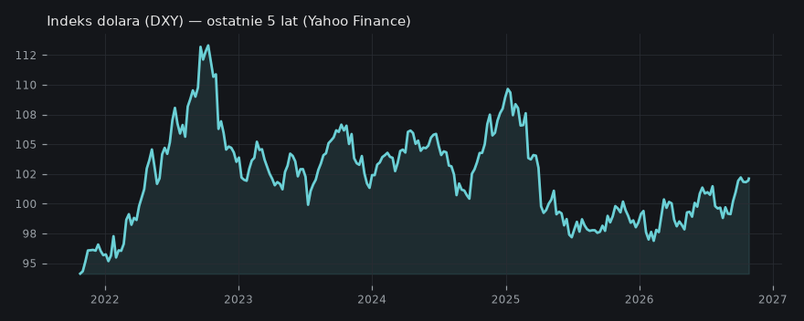

Jak protokoły altcoinów budują wartość poprzez odkup tokenów?draftsprawdź przed publikacjąaktualizacja
— Niektóre protokoły altcoinowe generują realne przychody i reinwestują je w odkup własnych tokenów, tworząc unikalny mechanizm napędzający ich wartość.
Czy wyceny firm AI powielają błędy bańki dot-comów?draftsprawdź przed publikacjąaktualizacja
— Wyceny aktywów AI zakładają niewiarygodny wzrost produktywności, budząc obawy o powtórzenie scenariusza bańki dot-comów z 1999 roku.
Fed zmienia strategię zarządzania płynnością, skupując dług zamiast podnosić stopy
Rezerwa Federalna, zamiast agresywnie zmieniać stopy procentowe, skupuje dług skarbowy USA, aby zarządzać rezerwami banków i stabilizować płynność, co może inaczej wpływać na rynki.
✍️ Draft na X
Kontrola redakcyjna: sprawdź przed publikacją
Temat opiera się na jednym materiale; sprawdź kluczową tezę w źródle przed publikacją.
🚨NIEPOPULARNA OPINIA🚨
Wg Michaela Dowa (Bankless), oficjalne dane o inflacji są zaniżone.
To oznacza, że realna inflacja jest wyższa niż nam się wydaje. 🤔
Jeśli to prawda, to polityka Fedu musi być dużo bardziej finezyjna, niż nam się wydaje.
Inaczej mówiąc: Fed wie, że system jest bardziej kruchy.
---
Dlatego zamiast agresywnie zmieniać stopy procentowe, Fed uderza z innej strony.
Aktywnie skupuje dług skarbowy USA.
Cel? Zarządzanie płynnością w systemie bankowym i stabilizacja rynków długu.
Nie jest to QE jak w 2008. To ewolucja polityki.
---
Wg Bankless, wartość rezerw bankowych spadła o blisko 80% w ciągu ostatniego roku.
To giga wskaźnik utraty płynności. 📉
Fed musi ratować sytuację, ale robi to "o połowę wolniej" niż kiedyś, żeby nie wywołać paniki.
To świadome unikanie gwałtownych ruchów, które by destabilizowały rynki.
---
Dow (Bankless) prognozuje, że czeka nas "nowy, nowy reżim" polityki płynnościowej.
Dla nas oznacza to jedno: trzeba rozumieć, jak naprawdę działa przepływ hajsu.
Inaczej oceniamy kierunki kapitału, gdy Fed kupuje dług, a nie tylko podnosi stopy.
Bądźcie czujni, bo to wpływa na wszystkie aktywa.
**Aktualizacja — co się zmieniło od wczoraj**
Wczoraj zwrac
poprzednio: Wielokrotne pomyłki Fed w prognozowaniu własnej polityki (2026-10-20)
Kto co mówi
Bankless: Rezerwa Federalna, w celu zarządzania płynnością w systemie bankowym i stabilizowania rynków długu, aktywnie skupuje dług skarbowy USA, co jest ewolucją polityki post-2008 i różni się od tradycyjnych podwyżek stóp procentowych.
(Could the Next Crypto Bull Market Arrive Sooner Than Expected?)
Ten mechanizm wskazuje na bardziej ukierunkowane działania Fed w stabilizacji rynku długu, co może różnić się od szerszych konsekwencji podwyżek stóp procentowych.
Indeks dolara (DXY) — ostatnie 5 lat (Yahoo Finance)

Co z tego wynika
Zrozumienie, w jaki sposób Fed zarządza płynnością, jest kluczowe dla oceny kierunku przepływów kapitału, ponieważ zmiana narzędzi polityki monetarnej może inaczej wpływać na atrakcyjność różnych klas aktywów.
Jak protokoły altcoinów budują wartość poprzez odkup tokenów?
Zamiast polegać wyłącznie na spekulacji, innowacyjne protokoły altcoinowe generują przychody, które są następnie wykorzystywane do cyklicznego odkupywania i spalania własnych tokenów, bezpośrednio wspierając ich cenę i zmniejszając podaż.
✍️ Draft na X
Kontrola redakcyjna: sprawdź przed publikacją
Temat opiera się na jednym materiale; sprawdź kluczową tezę w źródle przed publikacją.
🟢 Zapomnij o czystej spekulacji. Niektóre protokoły altcoinów budują realną wartość w sposób, który wielu przegapia.
---
Weźmy na przykład PONS – protokół, który wg EllioTrades jest "meme coin launcherem". Mimo to, generował solidne przychody i co najważniejsze, aż 80% z nich reinwestował w odkup własnych tokenów.
---
To nie jest magiczna sztuczka. To czysta inżynieria finansowa: protokół zarabia (np. na opłatach), a potem systematycznie odkupuje i spala własne tokeny z rynku. Jaki jest efekt? Redukcja podaży i stały, fundamentalny popyt, który bezpośrednio wspiera cenę tokena.
---
Większość ludzi widzi w 'meme coin launcherach' tylko szybką zabawę i równie szybki rekt. Ale ten mechanizm pokazuje, że nawet takie projekty mogą mieć solidne fundamenty, dając realne wsparcie zamiast pustego hype'u.
---
Wg EllioTrades, stosunek kapitalizacji do przychodów z odkupu tokenów (Market Cap / Buyback Revenue) to dobry wskaźnik. Jeśli przychody rosną, a cena tokena stoi w miejscu, to może być okazja. Czyli zamiast gonić za kolejnym pumpem, warto patrzeć, gdzie hajs z protokołu realnie pracuje na token. Tam może być ukryta wartość. Nie jest to porada inwestycyjna.
**Aktualizacja — co się zmieniło od wczoraj**
Wczoraj dys
poprzednio: Kiedy "on-chain" nie znaczy "zdecentralizowany": Kontrowersje wokół PaperTrade (2026-10-25)
Kto co mówi
EllioTrades: Kluczem do wzrostu wartości niektórych altcoinów, zwłaszcza tzw. "meme coin launcherów", jest mechanizm generowania znacznych przychodów przez protokół, a następnie reinwestowania ich (np. 80%) w odkup własnych tokenów, co fundamentalnie wspiera ich cenę.
(How To Make Money Trading Altcoins (Full Tutorial))
Ten mechanizm wskazuje na fundamentalny sposób tworzenia wartości w ekosystemie altcoinów, kontrastując z projektami opierającymi się wyłącznie na szumie i spekulacji.
Co z tego wynika
Identyfikowanie altcoinów z solidnymi modelami generowania przychodów i efektywnymi mechanizmami odkupu tokenów może być strategią dla inwestorów szukających projektów o realnym potencjale wzrostu poza czystą spekulacją.
Czy wyceny firm AI powielają błędy bańki dot-comów?
Wyceny firm z sektora sztucznej inteligencji opierają się na założeniu aż 14-krotnego wzrostu produktywności, co stwarza ryzyko nadmiernych oczekiwań, podobnych do tych, które doprowadziły do pęknięcia bańki internetowej.
✍️ Draft na X
Kontrola redakcyjna: sprawdź przed publikacją
Temat opiera się na jednym materiale; sprawdź kluczową tezę w źródle przed publikacją.
🚨NIEPOPULARNA OPINIA🚨
Wyceny spółek AI to już gruba przesada. wg Scotta Melkera z The Wolf Of All Streets, obecne rynkowe oczekiwania zakładają aż 14-krotny wzrost produktywności w sektorze sztucznej inteligencji. Czujecie to? 14 razy!
---
To brzmi jak powtórka z rozrywki z 1999 roku i bańki dot-comów, gdzie też pompowano kosmiczne wyceny na nierealistycznych obietnicach. Historia uczy, że takie scenariusze zazwyczaj kończą się jednym wielkim rektem.
---
Podczas gdy Nasdaq w ostatnim roku pociągnął mocno w górę, nie dajcie się zwieść. Hajs leci tam, gdzie widzi największe obietnice, ale te obietnice trzeba jeszcze dowieźć. Jeśli nie, ludzie znowu zostaną ubrani w hossę na niczym.
Lepiej patrzeć na solidne fundamenty, niż ślepo gonić za hype'em. Nie jest to porada inwestycyjna.
**Aktualizacja — co się zmieniło od wczoraj**
Wczoraj zwrac
poprzednio: Rynek akcji napędza wąska grupa spółek AI, reszta spada (2026-10-26)
Kto co mówi
The Wolf Of All Streets (Scott Melker): Obecne wyceny aktywów związanych ze sztuczną inteligencją zakładają nierealistyczny, 14-krotny wzrost produktywności, co jest analogiczne do nadmiernych oczekiwań obserwowanych podczas bańki internetowej w 1999 roku.
(Bitcoin And Gold Are Both LOSING In 2026 - Why?)
Ta teza sugeruje, że rynkowy entuzjazm wokół AI może prowadzić do nadmuchania wyceny, niezależnie od innych trendów rynkowych czy wyników konkretnych aktywów.
Inwestorzy powinni zachować ostrożność i dokładnie analizować fundamenty firm AI, aby uniknąć ryzyka związanego z potencjalną bańką spekulacyjną, pamiętając o lekcjach z przeszłości.